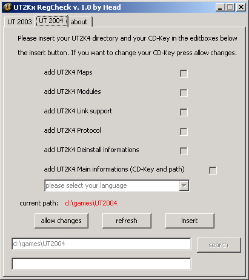

UT2Kx Regcheck
About
UT2Kx Regcheck - WTF?
The major task of this tool is to add your CD-Key and UT2kx-path to the windows-registry (after a format c:, if you lost your registry or in other cases) additional you are able to view/change your CD-Key and your UT2k3-path in a simple and easy way.
- Author
- Head : Name of the Author (me)
- Size
- 234.496 bytes : Size in bytes
- MD5 checksum
- 1282eb2c53c6d43a2d4c0d8f39e5ba70 : MD5 checksum to avoid changes in the tool (i.e. add a Keylogger or something similar)
- Operating systems
- WIN 95/98/ME/2K/XP/LH : Almost tested on all Windows Operations systems including Windows Longhorn
Changelog
Changelog 1.3 → 1.0 (09. apr. 2004)
- rename: the name of my tool is now UT2KxRegCheck
- added: full UT2004 Support, you can use it like the UT2003 version
- added: some eye-candy
- added: new about box
- fixed: a small bug with the searchbutton, which was inactive in some cases
Changelog 1.2 → 1.3 (18. jan. 2003) → final
- fixed: the informations for ut2mods will now be inserted right, the ut2mod files were erroneously redirected to the ut2003.exe. (thx to eXoR)
Changelog 1.1 → 1.2 (30. nov. 2002)
- added: exe compression from ~518 to ~223 kb (better compression than zip)
- added: language-support, you are now able to set all languages (which UT2k3 supports) to the registry
- added: error message if none or a wrong language was chosen
- added: version info if you right-click the exe and chose properties
- added: preview screenshot to the zip file
- fixed: "maximize" button is now disabled
- fixed: insert button shows "all data inserted" only if changes really have happend
- fixed: checkboxes will now be unchecked if you use the refresh button and if the keys allready exsist
Changelog 1.0 → 1.1 (28. nov. 2002)
- added: the UT-path search button
- added: the "allow changes" button for easy change of your cd-key
- added: ability to view the CD-Key and UT2k3 path
- added: stat "hidden" for checkboxes when regkey allready exsits
- added: ability to resfresh registry keys if external actions changed them
- fixed: spelling errors
- fixed: adding regkey for maps/links/protocols/umods doesnt work right
- fixed: the design .. looks better now imho
- fixed: the border is not longer sizeable
Changelog → 1.0 (26. nov. 2002)
- added: everything
Technik
Hey, cool tool – which language is that ?
Its written in Delphi 7.0 and compressed with UPX 1.24.
Security
WTF, does this tool steal my CD-Key ?
NO !, it doesn't steal your CD-Key. I sent the delphi source to Epic and DrSin answerd in (thread down sorry hope to get another statement from DrSin) thread to the security issuse. As you can see there is no security risk. →http://www.ataricommunity.com/forums/showthread.php?threadid=373656&perpage=30&pagenumber=6
Download
Preview

Download Link
http://download.beyondunreal.com/fileworks.php/geeks/ut2004/tools/ut2kxregcheck10.zip — 267 [KiB],  MD5 of .EXE file: 1282eb2c53c6d43a2d4c0d8f39e5ba70
MD5 of .EXE file: 1282eb2c53c6d43a2d4c0d8f39e5ba70
Credits
This tool was made by Head
- thx to eXor for reporting a major bug
- UT2k3 Regcheck is part of the UT2k3 Troopers MOD
Comments
DJPaul: Does this really needs its own Wiki page? Could we not just give it a link on a page of links, somewhere? Application, perhaps?
SavannahLion: The others at Application have their own pages as well. Or am I spacing on what you really mean? Would you rather just have linky clickys to the apps themselves? Actually, what I'm wondering is what kind of situation would you get yourself in that you would need this application? Wouldn't a format imply that you would be installing Unreal anyways?
DJPaul: Point taken. This page needs to be renamed to fit the style of other UT2003 pages - i.e. "UT2k3" isn't consistent with whatever else the Wiki uses. Also, we need a Category Category category (erk), like Category Application. Not sure if we need to split that Category down in to the different versions of the Unreal engine, however (i.e. [Category Application Deus Ex]? and [Category Application UT]?.
Head: well, do have once formated your C: partition ? The most ppl dont want to reinstall the whole game if some reg values are missing.
SavannahLion: You know, you're right DJ, I didn't notice that in the title. Typing UT2k3 is rather umm.... sloppy (No offense Head). It's only one extra keystroke off from UT2003, and it looks somewhat unprofessional. But once a page title is set, I think only Tarquin or Mycheal(sp?) can change that.
You're correct on that Head, but how often does that happen? Anyhow, I read the thread that was linked to and I can see your point. I come from the HL community and programs such as yours have a vastly different intent than what is described. Two sides to a coin I guess 
Head: i named the page UT2k3_Regcheck cuz its the name of my tool. The acronym for UnrealTournemant 2003 may be UT2003, but my tool has the name UT2k3 Regcheck. Btw, more than 9000 downloads from my webspace in 3 month cant miss. It IS usefull and ppl know that.
DJPaul: Noone said it wasn't useful.
Mortal Monkey: That link under Security is broken. Would be better if you quoted the important bits, methinks.
Also, would be nice with a short explanation of how the checksum works.
Head: Well the thread got deleted i better remove the link completly, thanks for the hint
Blue Ion: The links of the programs are now broken, they are no longer present in that server. If anyone knows of somewhere else that host these files...
Wormbo: A wiki works this way:
- someone finds a broken link
- the same person goes to www.google.com (or other websites) and searches for the thing
- based upon the result, the person
- updates the link on the wiki or
- puts a note on the page that the link is broken and alternate links could not be found
Now don't tell me you even attempted to find a different link, because searching for "UT2Kx Regcheck" turned up more than enough results.
/me updates primary download link